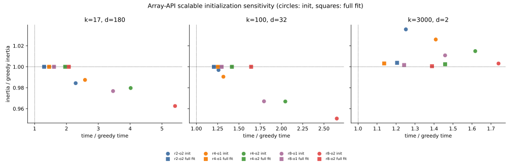
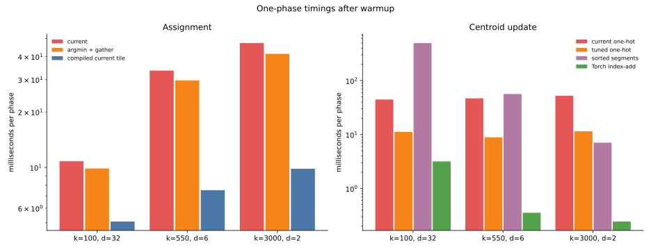
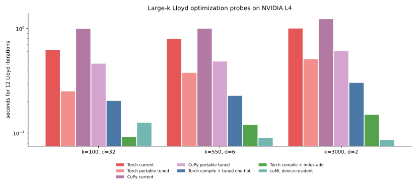

013 — why large-k cuML Lloyd wins, and what to optimize next
This iteration answers two questions raised by the consolidated results in 011:
1. Is the current array-API scalable k-means++ ever competitive with its greedy alternative? 2. Why does cuML overtake PyTorch CUDA in Lloyd iterations as k grows, and which changes have the best chance of closing that gap?
The short answers are:
- **No, not for these tasks and this single-start, 12-iteration workload.** Scalable initialization can lower inertia before Lloyd, but every tested configuration costs more than greedy k-means++, and Lloyd erases that quality advantage.
- **The large-
kLloyd gap is structural, not a faster GEMM.** cuVS fuses distance evaluation with the top-1 reduction and updates centroids with keyed reductions. The current array-API code materializes score tiles, reduces each tile twice, and builds about 400 one-hot membership tiles per iteration. - **There is a clear path forward.** Portable tile and reduction changes roughly halve the 12-iteration time on both PyTorch and CuPy. A compiled PyTorch assignment plus a native keyed update is faster than the cuML times reported in 011, although device-resident cuML remains faster in the isolated kernel comparison.
Experimental scope
All new GPU measurements run on the same NVIDIA L4 as 011, with float32 and TF32 disabled. Times are medians of three measurements after warmup.
- The phase probes use the seed-0 shared random rows and time assignment and update independently.
- The portable end-to-end probe calls the production
fit_lloydfor 12 fixed iterations on PyTorch and CuPy. - The compiled and native-update controls use a small interchangeable-phase loop. They measure optimization potential, not a new public implementation.
- The cuML scaling probe passes a CuPy array to
KMeans.fit, so data is already on the GPU. The 011 cuML rows instead pass a NumPy array and include host-to-device transfer, while the array-API timer starts after its transfer. - Scalable-init sensitivity covers seeds 0 through 2 on
k17-d180,k100-d32, andk3000-d2.
The drivers and raw data are probe_lloyd_large_k.py, probe_portable_lloyd.py, probe_cuml_lloyd_scaling.py, lloyd-probes.json, portable-results.json, and scalable-sensitivity.json.
Scalable k-means++ is dominated here
The figure plots each scalable configuration relative to greedy k-means++. Circles are initialization alone; squares are initialization followed by 12 Lloyd iterations. A point is competitive only if it approaches the lower-left corner (1, 1).

r4-o1, for example, means four sampling rounds with oversampling factor 1. The current default is r8-o2.
| init only | k17-d180 | k100-d32 | k3000-d2 |
|---|---|---|---|
| r2-o2 | 2.24x time, 0.9844x inertia | 1.26x time, 0.9969x inertia | 1.24x time, 1.0356x inertia |
| r4-o1 | 2.52x time, 0.9875x inertia | 1.32x time, 0.9905x inertia | 1.42x time, 1.0260x inertia |
| r4-o2 | 3.93x time, 0.9797x inertia | 2.05x time, 0.9669x inertia | 1.60x time, 1.0149x inertia |
| r8-o1 | 3.37x time, 0.9768x inertia | 1.80x time, 0.9671x inertia | 1.76x time, 1.0109x inertia |
| r8-o2 default | 5.31x time, 0.9626x inertia | 2.66x time, 0.9506x inertia | 1.72x time, 1.0031x inertia |
| full fit | k17-d180 | k100-d32 | k3000-d2 |
|---|---|---|---|
| r2-o2 | 1.32x time, 1.0000x inertia | 1.21x time, 0.9999x inertia | 1.20x time, 1.0037x inertia |
| r4-o1 | 1.47x time, 1.0000x inertia | 1.21x time, 0.9999x inertia | 1.14x time, 1.0032x inertia |
| r4-o2 | 1.92x time, 1.0000x inertia | 1.40x time, 1.0000x inertia | 1.43x time, 1.0024x inertia |
| r8-o1 | 1.61x time, 1.0000x inertia | 1.30x time, 1.0000x inertia | 1.24x time, 1.0017x inertia |
| r8-o2 default | 2.08x time, 1.0000x inertia | 1.65x time, 1.0000x inertia | 1.39x time, 1.0005x inertia |
The strongest initial gains are real: the default lowers pre-Lloyd inertia by 3.7% at 17 clusters and 4.9% at 100 clusters. They are not useful in this workload. At 17 clusters, greedy initialization plus all 12 Lloyd iterations already finishes in 1.25 s, less than the scalable initializer alone at 1.66 s. After Lloyd, every scalable result at 17 and 100 clusters agrees with greedy within 0.01%, while taking 21% to 108% longer. At 3000 clusters, scalable initialization is worse before and after Lloyd for every setting.
This does not disprove scalable k-means++ as an algorithm. Its intended advantages are parallel and distributed candidate sampling, and it can matter when one greedy D² pass per selected center is prohibitive. Those conditions are absent from this single-GPU task mix. The present implementation should remain experimental rather than become the default.
Why cuML Lloyd gets faster as k grows
The 011 times include substantial fixed costs. Fitting cuML from a NumPy array includes transfer to the GPU; the array-API timer starts after its data is resident. Repeating the cuML measurement with a CuPy input exposes the actual iteration cost:
| task | PyTorch current, 12 iterations | cuML from NumPy, 12 iterations | cuML from CuPy, 12 iterations | fitted PyTorch cost / iteration | fitted device-cuML cost / iteration |
|---|---|---|---|---|---|
| k100-d32 | 0.812 s | 0.615 s | 0.126 s | 48.8 ms | 8.6 ms |
| k550-d6 | 1.033 s | 0.511 s | 0.090 s | 67.7 ms | 6.1 ms |
| k3000-d2 | 1.407 s | 0.377 s | 0.086 s | 101.4 ms | 6.0 ms |
The fitted costs are slopes through max_iter 1, 4, and 12. cuML has a higher fixed cost with NumPy input, which is why PyTorch wins the small-k cases in 011. Once enough iterations or clusters amortize that cost, cuML's much cheaper iteration dominates.
Assignment
On the L4, cuVS always selects its fused path: use_fused selects it for compute capability major version 8, and the L4 is 8.9. fusedDistanceNNMinReduce computes distances and returns one KeyValuePair<label, distance> per sample without materializing a distance matrix. Sample norms are computed once before the iteration loop.
The array-API assignment makes a score tile, calls argmin, calls min over the same tile, then merges that tile's result into a running minimum. The current schedules are:
| task | assignment tiles | update membership tiles | assignment | update |
|---|---|---|---|---|
| k100-d32 | 23 | 367 | 10.8 ms | 44.6 ms |
| k550-d6 | 27 | 387 | 33.6 ms | 47.0 ms |
| k3000-d2 | 36 | 396 | 47.3 ms | 52.3 ms |
The task arithmetic actually falls from about 4.8 billion multiply-add terms at k100-d32 to 0.81 billion at k3000-d2. PyTorch gets slower because the low-dimensional GEMMs and hundreds of small reductions use the GPU poorly; the work is no longer proportional to useful floating-point operations.
Centroid update
cuVS passes the labels directly to reduce_rows_by_key and reduce_cols_by_key for feature sums and cluster weights. Those are keyed (segmented) reductions: for every row, add its feature vector into the bucket named by its label, and add one into that bucket's count. No buffer proportional to n_samples x n_clusters is ever materialized.
The Python array API standard has no such operation. It defines whole-array reductions (sum, mean, argmin, ...) along an axis, but nothing that scatters contributions into n_clusters buckets named by an arbitrary integer label array. Without a keyed reduction, the only portable way to turn "sum rows that share a label" into axis reductions is to make the label visible as an axis: build a one-hot membership matrix and reduce along its sample axis. That is what update_centroids_tiled does, one (tile_n, tile_k) tile at a time:
# kmeans_lloyd/src/kmeans_lloyd/iteration.py, inside update_centroids_tiled
ids = xp.arange(k1 - k0, dtype=labels.dtype, device=_device(X)) + k0
membership = xp.astype(labels[:, None] == ids[None, :], X.dtype) # (tile_n, tile_k)
counts = xp.sum(membership, axis=0)
sums = xp.matmul(xp.matrix_transpose(membership), X) # (tile_k, n_features)labels[:, None] == ids[None, :] is the only portable stand-in for a scatter: it is a whole-array comparison that happens to encode "which bucket does this row belong to" as a dense 0/1 matrix, which matmul can then reduce. Every one of the roughly 400 tiles per iteration recomputes this matrix and immediately discards it; none of that tile_n x tile_k work represents a cluster that could not have been added to directly.
PyTorch (and CuPy, through its own non-standard API) does expose the keyed reduction cuVS uses, just not through the array API. Tensor.index_add_ adds rows of X into sums at the row positions given by labels, in one launch, with no intermediate matrix:
# kmeans_lloyd/scripts/probe_lloyd_large_k.py, update_index_add
def update_index_add(X, labels, old):
"""Torch control for a native scatter-based centroid update."""
sums = torch.zeros_like(old)
sums.index_add_(0, labels, X)
counts = torch.bincount(labels, minlength=old.shape[0]).to(X.dtype)
return torch.where(
counts[:, None] == 0,
old,
sums / torch.clamp(counts[:, None], min=1),
)This is not a drop-in replacement inside the array-API code path. index_add_ is a torch.Tensor method, not an array_api_compat function, so calling it means branching on the concrete backend instead of writing one function that runs unchanged on PyTorch, CuPy, and NumPy. CuPy has its own equivalent, cupyx.scatter_add(sums, labels, X), with the same effect and the same unbuffered-add semantics, but a different name and import path. NumPy's is np.add.at(sums, labels, X), slower than either because it is not vectorized on CPU. None of the three is exposed by the array API standard, so today's single code path cannot reach any of them without an if xp is torch: ... elif xp is cupy: ... else: ... fork, which is what the "add an explicit centroid-update hook" recommendation below proposes to isolate behind one optional callable rather than scatter throughout update_centroids_tiled.
The effect of avoiding the one-hot matrix entirely is large. Measured on the same three large-k probes, with labels and final centers validated against the current tiled implementation:
| update phase, 12 iterations of the probe loop | k100-d32 | k550-d6 | k3000-d2 |
|---|---|---|---|
current one-hot tiles (k256, n4096) | 44.6 ms | 47.0 ms | 52.3 ms |
tuned one-hot tiles (k100/k512, n16384) | 11.2 ms | 8.9 ms | 11.5 ms |
native index_add_ | 3.18 ms | 0.36 ms | 0.24 ms |
Tuning the one-hot tile shape alone, with no backend-specific code, already removes most of the gap: it launches about 25 tiles per iteration instead of 400, each doing more useful work per equality comparison. index_add_ removes the equality comparison altogether, and its cost falls as k grows instead of rising, because the kernel's work is proportional to n_samples x n_features, not to the number of one-hot tiles needed to cover n_clusters. This is the mechanism behind the largest numbers in the "Optimization probes" table below: the one-hot matrix is pure overhead that a keyed reduction does not pay.
Optimization probes

Three results stand out:
1. Replacing the second reduction with argmin plus take_along_axis is portable and saves 9% to 13% of assignment time. 2. Increasing the membership tile from 4096 by 256 to 16384 by up to 512 cuts update time from 45–52 ms to 9–11 ms. It spends more memory per tile but launches far fewer tiles. 3. torch.compile cuts assignment to 5–10 ms. A native index_add_ update takes 0.24–3.2 ms. Together they show that PyTorch itself is not the limitation; the portable schedule and missing keyed-reduction operation are.
The sorted-segment experiment is not a general replacement. It is fast only at k3000-d2; it takes 56 ms at k550-d6 and 496 ms at k100-d32, and subtracting large cumulative sums increases the maximum center discrepancy to between 1.7e-4 and 7.8e-4.

| 12 iterations | k100-d32 | k550-d6 | k3000-d2 |
|---|---|---|---|
| PyTorch current | 0.626 s | 0.793 s | 1.001 s |
| PyTorch portable tuned | 0.251 s | 0.377 s | 0.508 s |
| CuPy current | 0.992 s | 0.997 s | 1.228 s |
| CuPy portable tuned | 0.461 s | 0.484 s | 0.610 s |
| PyTorch compile + tuned one-hot | 0.203 s | 0.227 s | 0.302 s |
| PyTorch compile + native index-add | 0.091 s | 0.119 s | 0.150 s |
| cuML, device-resident input | 0.126 s | 0.090 s | 0.086 s |
The portable schedule is the strongest low-risk result. It is 2.0x to 2.5x faster on PyTorch and 2.0x to 2.2x faster on CuPy. At 550 and 3000 clusters, its peak allocator increment also falls from 138 and 132 MiB to 84 and 78 MiB on PyTorch, and to 80 and 74 MiB on CuPy. Final inertia changes by at most 3.4e-5 relative.
Compilation plus the tuned one-hot update is 2.9x to 3.4x faster than the current PyTorch schedule. The native-update control is 6.5x to 6.8x faster and beats the cuML timings from 011. Device-resident cuML remains 1.3x faster at 550 clusters and 1.7x faster at 3000 clusters, consistent with its fully fused assignment and keyed update.
Recommended next steps
The order matters: land the portable win first, then add optional backend acceleration without making the portable implementation harder to reason about.
1. Land the portable schedule
- Change the assignment tile to obtain labels with
argminand gather the selected score withtake_along_axis, rather than reducing the score tile a second time. - Use 16384 sample rows and up to 512 centroid columns for the GPU one-hot update. Use 128 centroid columns for low-dimensional, large-
kassignment. - Keep the existing schedule on CPU. Express the GPU choice as one documented memory-budget heuristic rather than backend-name conditionals.
- Re-run all five tasks on PyTorch and CuPy, including empty-center relocation, before changing the default. The probe covers shared random starts but not every initializer path.
Expected result: about 2x faster Lloyd on both CUDA backends and lower peak memory at large k, with no backend-specific operations.
2. Add an explicit centroid-update hook
Add an optional update callable to lloyd_step, fit_lloyd, and fit_kmeans, analogous to the existing assignment step hook. Then provide experimental controls using PyTorch index_add_ and the CuPy equivalent, while retaining the one-hot array-API fallback.
This is the highest-upside change: the PyTorch control is 14x to more than 200x faster than the current update phase. It also avoids the numerical instability of the portable sort-and-prefix-sum experiment. A production fast path needs tests for empty clusters, deterministic behavior, dtype handling, and agreement across all three backends.
3. Cache a compiled PyTorch assignment
Compile the existing score-tile callable by shape and dtype, outside the Lloyd loop. It preserves labels exactly in these probes and cuts assignment by 2.1x to 4.8x. Keep compilation opt-in until compile latency, dynamic last-tile shapes, and cache behavior are measured in complete user-facing fits.
The naive compiled broadcast-distance control is not a next step: it is slower and changes 1506 labels at k3000-d2 because its arithmetic and tie behavior differ.
4. Reassess before writing a custom fused kernel
After the keyed update and compiled assignment, PyTorch reaches 0.15 s for the 3000-cluster probe. Only then is it worth evaluating a Triton distance-plus-top-1 kernel analogous to cuVS. Writing that kernel first would optimize the smaller bottleneck while leaving the one-hot update untouched.
5. Keep scalable initialization experimental
- Keep greedy k-means++ as the default for this task class.
- Do not tune the number of rounds further: every 2-, 4-, and 8-round result is dominated after Lloyd.
- If a distributed or out-of-core workload is added, revisit scalable initialization under a fixed wall-time budget and include the weighted candidate Lloyd refinement identified in 011.
- Re-run this decision after Lloyd is optimized. Faster Lloyd makes the current scalable initializer's fixed overhead relatively larger, not smaller.
Conclusion
The 011 result is not evidence that Python or PyTorch cannot compete with cuML at large k. It identifies two missing execution strategies: fused top-1 assignment and keyed centroid reduction. The portable code can recover roughly half the gap with better tiles and one fewer reduction. A compiled assignment and native keyed update recover most of the rest.
By contrast, no scalable-init setting tested here reaches the greedy time-quality frontier after Lloyd. Improving Lloyd should take priority over further scalable-seeding work in this PR.
Previous: source-link audit. Index: journal. Next: portable array-API KMeans.